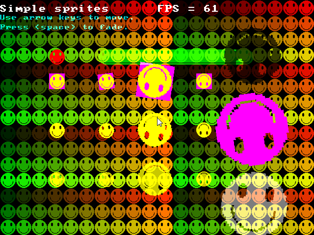

Easy GL2D is a very simple 2D OpenGL based rendering library. My goals in making this lib are:
Easy GL2D started as a proof-of-concept over at the FB forums. I just decided to port my 2D DS rendering lib to the PC one day and the result is Easy GL2D. At first my purpose was just to "show" how easy it is to use HW as long as the lib design is simple. However, people somehow liked it and wanted me to extend it. The result? Easy GL2D and my DS game stagnating.
The initial release of the lib has all of its functions self-contained. No function needs anything except OpenGL and FB to work. However, I have since added some stuff like glowlines and a system font routine for print debugging so I introduced 3 globals( which are inside the namespace so it's kinda safe).
All you have to do is include these lines on top of your programs.
For the FB.image compatible version:
#include once "fbgl2d.bi"
#include once "fbgl2d.bas"
For the standard version:
#include once "gl2d.bi"
#include once "gl2d.bas"
However, I would like to stress that you should use the "[fb]gl2d.bas" files as a module and not as an include but the above seems easier for most.
Then set up the screen, draw some stuff, etc.
#include once "fbgl2d.bi"
#include once "fbgl2d.bas"
const SCR_WIDTH = 640
const SCR_HEIGHT = 480
const as single PI = atn(1)*4
'' initialize gl2d (640 x 480)
gl2d.screen_init( SCR_WIDTH, SCR_HEIGHT )
gl2d.vsync_on() '' set vsynch on
dim as integer frame = 0
do
frame += 1
'' clear buffer always
gl2d.clear_screen()
'' circle test
gl2d.circle_2d_filled(100,100,150-abs(sin(frame/25)*150),GL2D_RGBA(0,255,0,255))
gl2d.circle_2d(100,100,abs(sin(frame/25)*150),GL2D_RGBA(255,255,0,255)
'' Draw black box
gl2d.set_blend_mode(GL2D.E_SOLID)
GL2D.box_filled(400,40,639,479,GL2D_RGBA(0,0,0,0))
'' ellipse test
gl2d.set_blend_mode(GL2D.E_BLENDED)
gl2d.ellipse(320, 240, 50, 200, PI/6*5, GL2D_RGBA(255, 128, 64, 255))
gl2d.ellipse_filled(320, 240, 10+abs(sin(frame/25)*250), 10+250-abs(sin(frame/25)*250), frame/65, GL2D_RGBA(255, 128, 64, 255))
'' box
GL2D.box(400,40,639,479,GL2D_RGBA(220,255,55,0))
'' triangle test
gl2d.triangle(480,100,630,50,560,200,GL2D_RGBA(25,2,255,255))
GL2D.Triangle_filled(490,105,610,60,590,135,GL2D_RGBA(255,255,255,255))
glColor4ub(255,255,255,64) '' factor of 64/256 blending
gl2d.set_blend_mode(GL2D.E_BLENDED)
GL2D.Triangle_filled_gradient(290,150,510,60,490,135,_
GL2D_RGBA(0,255,255,255),_
GL2D_RGBA(255,255,0,255),_
GL2D_RGBA(255,0,255,255))
gl2d.set_blend_mode(GL2D.E_SOLID) '' back to solid
glColor4ub(255,255,255,255) '' Opaque again
'' pset test
for i as integer = 0 to 359 step 10
dim as integer px = 20 * cos(i*PI/180)
dim as integer py = 20 * sin(i*PI/180)
gl2d.put_pixel(430+px,70+py,GL2D_RGBA(255,2,255,255))
next i
gl2d.set_blend_mode(GL2D.E_GLOW)
'' glow lines on steroids
for i as integer = frame to 359+frame step 20
dim as integer px = 120 * cos(i*PI/180)
dim as integer py = 120 * sin(i*PI/180)
dim as integer px2 = 120 * cos((i+20)*PI/180)
dim as integer py2 = 120 * sin((i+20)*PI/180)
dim as integer adder = abs(7*sin(frame/20))
for j as integer= 0 to adder
gl2d.line_glow (320+px,240+py,320+px2,240+py2,20-(adder*2),GL2D_RGBA(255+frame,255-frame,128+frame,255))
next j
next i
'' limit fps to 60 frames per second
dim as single FPS = gl2d.fps_limit(60)
'' Test print
gl2d.set_blend_mode(GL2D.E_TRANS) '' blended
glColor4ub(255,255,255,255) '' no transluceny
gl2d.print_scale(40, 10,2, "Easy GL2D simple test FPS = " + str(fps))
flip
sleep 1,1
Loop Until Multikey( FB.SC_ESCAPE )
The complete code above draws some primitives, glowlines, circles, ellipse, etc and animates them using a frame counter. I've commented the code as much as I can. It also calls an FPS limiter since vsynch somehow does not work on some cards.
You will notice that I can also issue standard OpenGL comands. I made Easy GL2D compatible with standard OpenGL so that you could use all the power you have at your disposal.
So doing this:
gl2d.set_blend_mode(GL2D.E_SOLID)
GL2D.box_filled(400,40,639,479,GL2D_RGBA(0,0,0,0))
Would draw a black solid screen while this:
gl2d.set_blend_mode(GL2D.E_BLENDED)
GL2D.box_filled(400,40,639,479,GL2D_RGBA(255,255,255,128))
Would draw a 1/2 or 128/256 blended white box(Useful for fade effects).
Current blend modes and colors will stay unless you change states. Always remember that gl2d is a state machine like OpenGL. I would suggest you play around with the code to see the effects.
Sprites are easy to manage in easy GL2D. Since I made Easy GL2D FB.image compatible, you can use HW instead of SW with a simple cast().
So instead of:
put(100,250),img
You do this:
gl2d.sprite(100,250,cast(gl2d.image ptr,img))
It's that simple. In fact if you use a spriteset, you never have to cast at all. Here's a complete example.
'' Code supplement on how to use:
'' 1. Sprites and its plethora of uses
'' 2. Shadows
'' 3. Fading
'' Relminator(Richard Eric M. Lope BSN RN)
'' Http://rel.betterwebber.com
#include once "fbgl2d.bi"
#include once "fbgl2d.bas"
declare sub draw_bg(byval spr as any ptr)
using FB
const SCR_WIDTH = 640
const SCR_HEIGHT = 480
const as single PI = atn(1)*4
const false = 0
const true = not false
'' initialize gl2d (640 x 480)
gl2d.screen_init( SCR_WIDTH, SCR_HEIGHT )
gl2d.vsync_on() '' set vsynch on
''===================== FB EXAMPLE FILE TEST ===============================================
'' Got this sprite in the CHM examples
dim img as fb.image ptr = imagecreate( 32, 32, rgb(255, 0, 255), 32 )
circle img, (16, 16), 15, rgb(255, 255, 0), , , 1, f
circle img, (10, 10), 3, rgb(255, 0, 255), , , 2, f
circle img, (23, 10), 3, rgb(255, 0, 255), , , 2, f
circle img, (16, 18), 10, rgb(255, 0, 255), 3.14, 6.28
'' load the sprite to HW (SW data still remains for whatever purposes you want)
'' Pixel perfect collision FTW!!!
gl2d.load_image_to_HW(cast(gl2d.image ptr, img))
''================= END FB EXAMPLE FILE TEST ===============================================
dim as integer xa, ya, xb, yb
xa = 100
ya = 100
xb = 200
yb = 100
dim as integer frame = 0
dim as integer fade = false
dim as integer fade_alpha = 0
do
frame += 1
'' clear buffer
gl2d.clear_screen()
'' draw our bg
draw_bg(img)
'' normal color
glColor4ub(255,255,255,255)
'' =================================
'' SOLID
'' Solid simple
gl2d.set_blend_mode(GL2D.E_SOLID)
gl2d.sprite(100,150,cast(gl2d.image ptr,img))
'' solid rotated
'' add 1/2 dimensions since rotation is center-based
gl2d.sprite_rotate(200 + (img->width/2),150 + (img->height/2),frame,cast(gl2d.image ptr,img))
'' solid rotated and scaled
gl2d.sprite_rotate_scale(300 + (img->width/2),150 + (img->height/2),-frame,sin(frame/30)*3,cast(gl2d.image ptr,img))
'' solid flipped
gl2d.sprite_flip(400,150,GL2D.E_VH,cast(gl2d.image ptr,img))
'' =================================
'' TRANSPARENT
'' Trans simple
gl2d.set_blend_mode(GL2D.E_TRANS)
gl2d.sprite(100,250,cast(gl2d.image ptr,img))
'' Trans rotated
'' add 1/2 dimensions since rotation is center-based
gl2d.sprite_rotate(200 + (img->width/2),250 + (img->height/2),frame,cast(gl2d.image ptr,img))
'' Trans rotated and scaled
gl2d.sprite_rotate_scale(300 + (img->width/2),250 + (img->height/2),-frame,sin(frame/30)*3,cast(gl2d.image ptr,img))
'' Trans flipped
gl2d.sprite_flip(400,250,GL2D.E_VH,cast(gl2d.image ptr,img))
'' =================================
'' BLENDED
'' set color to 200/256 blending
glColor4ub(255,255,255,200)
'' blend simple
gl2d.set_blend_mode(GL2D.E_BLENDED)
gl2d.sprite(100,350,cast(gl2d.image ptr,img))
'' blend rotated
'' add 1/2 dimensions since rotation is center-based
gl2d.sprite_rotate(200 + (img->width/2),350 + (img->height/2),frame,cast(gl2d.image ptr,img))
'' blend rotated and scaled
gl2d.sprite_rotate_scale(300 + (img->width/2),350 + (img->height/2),-frame,sin(frame/30)*3,cast(gl2d.image ptr,img))
'' blend flipped
gl2d.sprite_flip(400,350,GL2D.E_VH,cast(gl2d.image ptr,img))
'' =================================
'' Green blended streched
gl2d.set_blend_mode(GL2D.E_BLENDED)
glColor4ub(0,255,255,200)
gl2d.sprite_stretch_h(xb,yb,32+abs(sin(frame/20)*300),cast(gl2d.image ptr,img))
'' red transparent
gl2d.set_blend_mode(GL2D.E_TRANS)
glColor4ub(255,0,0,255)
gl2d.sprite(xa,ya,cast(gl2d.image ptr,img))
'' shadow and fade effect
gl2d.set_blend_mode(GL2D.E_BLACK) '' transparent
glColor4ub(0,255,255,abs(sin(frame/50)*255))
'' blend rotated and scaled
gl2d.sprite_rotate_scale(500 + (img->width/2),100 + (img->height/2),-frame,sin(frame/30)*5,cast(gl2d.image ptr,img))
'' Sprite stencil (draws a sprite in pure RGBA color)
gl2d.Set_blend_mode(GL2D.E_TRANS)
'' enable sprite stencil with colour of GL2D_RGBA(0,0,255,255) and env color of GL2D_RGBA(255,0,255,255)
gl2d.enable_sprite_stencil(true, GL2D_RGBA(0,0,255,255), GL2D_RGBA(255,0,255,255))
'' Fuchsia color transparent
gl2d.sprite_rotate_scale(500 + (img->width/2),250 + (img->height/2),frame,sin(frame/20)*5,cast(gl2d.image ptr,img))
'' Pure white blended
gl2d.enable_sprite_stencil(true, GL2D_RGBA(255,255,255,255), GL2D_RGBA(255,255,255,255))
gl2d.set_blend_mode(GL2D.E_BLENDED) '' blending
glColor4ub(0,0,255,127)
gl2d.sprite_rotate_scale(500 + (img->width/2),400 + (img->height/2),-frame,sin(frame/24)*5,cast(gl2d.image ptr,img))
'' disable sprite stencil
gl2d.enable_sprite_stencil(false)
if multikey(SC_LEFT ) and xa > 0 then xa = xa - 1
If multikey(SC_RIGHT) and xa < 639 then xa = xa + 1
if multikey(SC_UP ) and ya > 0 then ya = ya - 1
if multikey(SC_DOWN ) and ya < 479 then ya = ya + 1
if multikey(SC_SPACE) then fade = true
if fade then
gl2d.set_blend_mode(GL2D.E_BLENDED) '' fade to white by blending
gl2d.box_filled(0,0, SCR_WIDTH-1, SCR_HEIGHT-1, GL2D_RGBA(255,255,255,fade_alpha))
if frame and 7 then fade_alpha += 1 '' increase alpha every 8th frame
if fade_alpha = 255 then exit do '' exit if full
EndIf
'' limit fps to 60 frames per second
dim as single FPS = gl2d.fps_limit(60)
'' Test print
gl2d.set_blend_mode(GL2D.E_TRANS) '' transparent
glColor4ub(255,255,255,255) '' no transluceny
gl2d.print_scale(0, 10,2, "Simple sprites FPS = " + str(fps))
gl2d.set_blend_mode(GL2D.E_BLENDED) '' transparent
glColor4ub(0,255,255,200) '' 1/2 transluceny
gl2d.print_scale(0, 30,1.5, "Use arrow keys to move.")
gl2d.print_scale(0, 50,1.5, "Press <space> to fade.")
flip
sleep 1,1
Loop Until Multikey( FB.SC_ESCAPE )
'' destroy da happy face
gl2d.destroy_image(cast(gl2d.image ptr,img))
gl2d.destroy()
'' Reset screen and test the sprite in
'' FBGFX mode
screenres 640, 480, 32
cls
Print "Back in FBGFX"
put(100,100), img, trans
sleep
sleep
end
sub draw_bg(byval spr as any ptr)
dim as FB.image ptr temp = spr
dim as integer tiles_x = SCR_WIDTH\temp->width
dim as integer tiles_Y = SCR_HEIGHT\temp->height
gl2d.set_blend_mode(GL2D.E_TRANS)
for y as integer = 0 to tiles_y
for x as integer = 0 to tiles_x
glColor4ub(x*2 / (tiles_x) * 255, y*4 / (tiles_y) * 255, (y+x)*2 / (tiles_y) * 255,255)
gl2d.sprite(x * temp->width,y * temp->height,cast(gl2d.image ptr, spr))
next x
next y
End Sub
The above code showcases some sprite routines. I haven't used some of the more obscure sprite routines to make it simple. Try downloading easy GL2D for some more sprite drawing examples.
Salient code from above:
dim img as fb.image ptr = imagecreate( 32, 32, rgb(255, 0, 255), 32 )
circle img, (16, 16), 15, rgb(255, 255, 0), , , 1, f
circle img, (10, 10), 3, rgb( 0, 0, 0), , , 2, f
circle img, (23, 10), 3, rgb( 0, 0, 0), , , 2, f
circle img, (16, 18), 10, rgb( 0, 0, 0), 3.14, 6.28
'' load the sprite to HW (SW data still remains for whatever purposes you want)
gl2d.load_image_to_HW(cast(gl2d.image ptr, img))
The happy face drawing code I copied from the FB help file. Note that you only need one call to gl2d.load_image_to_HW() to upload your image to VRAM.
You will also notice that all the drawing codes shared by the example blits (from solid to blended) are the same. All you need to do to change blitting behavior is to call gl2d.Set_blend(). What could be easier than that?
To really abuse the speed of HW rendering, it is always a good practice to batch your textures. Batching textures limit the amount of glBindTexture() calls ergo, making your engine run at an astonishing speed. That is why I made this:
Why would you use my texture atlas generator?
So, how do I use your texture packer?
Assuming you have these tiles inside the images folder…
When you double-click the launcher…
I set it up to have a name of “crono”, width = 256, Height = 128 pixels and 8 BPP (Easy GL2D would automatically convert it to 32 bits on load).
After pressing “Go!” you will have these files at the “texture/” folder…
Then just include “uvcoord_crono.bi”, call init_sprites() and call sprite(x,y,spriteset(index)). Easy huh? Here's an example of how to use the files generated by my texture packer in Easy GL2D. Of course you may not want to use my texture packer and use a rigid system where all tiles in a spriteset has the same dimensions so you could just load your spriteset init_sprites uisng the second calling convention:
image of the tileset (256x256) with 16x16 tiles
'' Code supplement on how to use:
'' 1. Loading spritesets made with my texture packer
'' 2. loading tilesets with the same tile dimensions
'' Relminator(Richard Eric M. Lope BSN RN)
'' Http://rel.betterwebber.com
#include once "fbgl2d.bi"
#include once "fbgl2d.bas"
'' include auto_generated texture coords
'' by my texture packer
#include once "uvcoord_crono.bi"
'' A randomized bg
declare sub draw_bg(sprites() as GL2D.image ptr, map() as ubyte)
using FB
const SCR_WIDTH = 640
const SCR_HEIGHT = 480
const as single PI = atn(1)*4
const false = 0
const true = not false
'' our randomized BG map
redim as ubyte map(SCR_WIDTH * SCR_HEIGHT)
'' initialize gl2d (640 x 480)
gl2d.screen_init( SCR_WIDTH, SCR_HEIGHT )
'' crono and tiles
'' redim it to force dynamic memory
redim as GL2D.IMAGE ptr tiles(0)
redim as GL2D.IMAGE ptr crono(0)
'' init spritesheet using my texture packer
gl2d.init_sprites(crono(),crono_texcoords(),"crono.bmp")
'' TRY to REM the above and UNREM this for bi-linear filtering
'' gl2d.init_sprites(crono(),crono_texcoords(),"crono.bmp", GL_LINEAR)
'' init our sprites without the help of the texture packer
'' since we know our tiles are 16 x 16 in size
gl2d.init_sprites(tiles(),16,16,"tiles_128x256_16x16.bmp")
'' init our map with randomized munbers
'' Notice thai I'm using ubound for safety
'' tileset is resized after init_sprites
'' maxtiles = ubound(tiles)
'' I subtracted stuff because we have some dead
'' tiles at the end of the tileset.
'' More reason to use my texture packer
for i as integer = 0 to ubound(map)
map(i) = i mod int((ubound(tiles)-38))
next
gl2d.vsync_on() '' set vsynch on
dim as integer frame = 0
dim as integer char_index = 0 ' crono animation
do
frame += 1
'' clear buffer
gl2d.clear_screen()
'' draw our bg
draw_bg(tiles(), map())
'' animate
if (frame and 7) = 0 then
char_index = (char_index + 1) mod 6 '' mod 6 since we have 6 frames of animation
endif
'' scale it 2x since it's gonna be too small otherwise
'' normal transparent
glColor4ub(255, 255, 255, 255)
gl2d.sprite_scale( 100,150,2, crono(char_index) )
gl2d.sprite_scale( 150,150,2, crono(6 + char_index) )
gl2d.sprite_scale( 200,150,2, crono(12+ char_index) )
'' color it red
glColor4ub(255, 0, 0, 255)
gl2d.sprite_scale( 300,150,2, crono(char_index) )
'' pink
glColor4ub(255, 0, 255, 255)
gl2d.sprite_scale( 350,150,2, crono(6 + char_index) )
'' blue
glColor4ub(0, 0, 255, 255)
gl2d.sprite_scale( 400,150,2, crono(12+ char_index) )
'' blend it by 200/255
gl2d.set_blend_mode(GL2D.E_BLENDED)
glColor4ub(255, 255, 255, 200)
gl2d.sprite_scale( 100,250,2, crono(char_index) )
gl2d.sprite_scale( 150,250,2, crono(6 + char_index) )
gl2d.sprite_scale( 200,250,2, crono(12+ char_index) )
' Enable sprite stencil
gl2d.set_blend_mode(GL2D.E_TRANS)
glColor4ub(255, 255, 255, 255)
gl2d.enable_sprite_stencil(true, GL2D_RGBA(255,255,255,255), GL2D_RGBA(255,255,255,255))
gl2d.sprite_scale( 300,250,2, crono(char_index) )
gl2d.enable_sprite_stencil(true, GL2D_RGBA(0,255,0,255), GL2D_RGBA(0,0,255,255))
gl2d.sprite_scale( 350,250,2, crono(6 + char_index) )
gl2d.enable_sprite_stencil(true, GL2D_RGBA(0,0,0,255), GL2D_RGBA(0,255,255,255))
gl2d.sprite_scale( 400,250,2, crono(12+ char_index) )
'' disable sprite stencil
gl2d.enable_sprite_stencil(false)
'' black mode. Useful for shadows
gl2d.set_blend_mode(GL2D.E_BLACK)
glColor4ub(255, 255, 255, 255) '' full black
gl2d.sprite_scale( 100,350,2, crono(char_index) )
gl2d.sprite_scale( 150,350,2, crono(6 + char_index) )
'' blend it by 1/2
'' no need to set E_BLENDED since E_BLACK is blended by default
glColor4ub(255, 255, 255, 128)
gl2d.sprite_scale( 200,350,2, crono(12+ char_index) )
'' normal color
glColor4ub(255,255,255,255)
'' limit fps to 60 frames per second
dim as single FPS = gl2d.fps_limit(60)
'' print
gl2d.set_blend_mode(GL2D.E_TRANS) '' transparent
glColor4ub(0,0,0,255) '' no transluceny
gl2d.print_scale(0, 10,2, "Spriteset example FPS = " + str(fps))
gl2d.print_scale(0, 30,1.5, "Crono sprite uses the texturepacker UV values.")
gl2d.print_scale(0, 50,1.5, "BackGround tiles does not.")
'' print debug stuff
gl2d.print_scale(0, 80,1.5, "MaxBGTiles = " + str(ubound(tiles)) )
gl2d.print_scale(0, 100,1.5, "MaxCronoTiles = " + str(ubound(crono)) )
flip
sleep 1,1
Loop Until Multikey( FB.SC_ESCAPE )
'' destroy tiles
gl2d.destroy_sprites(tiles())
gl2d.destroy_sprites(crono())
gl2d.destroy()
end
sub draw_bg(sprites() as GL2D.image ptr, map() as ubyte)
dim as integer tiles_x = SCR_WIDTH\sprites(0)->width
dim as integer tiles_Y = SCR_HEIGHT\sprites(0)->height
gl2d.set_blend_mode(GL2D.E_TRANS)
glColor4ub(255,255,255,255)
dim as integer i = 0
for y as integer = 0 to tiles_y
for x as integer = 0 to tiles_x
i += 1
gl2d.sprite( x * sprites(map(i))->width,y * sprites(map(i))->height, sprites(map(i)) )
next x
next y
End Sub
Collisions
Collisions could be done via SAT (Article I wrote for the first issue of Back2BASIC).
Or you can do a sofware pixel-perfect collision. Yes, we can do software collisions while blitting via the hardware(The best of both worlds). Check out the example file I supplied with Easy GL2D for more info. Warning: Use the collision routine I supplied with sample code as I made a few changes to Mysoft's code to make it work with Easy GL2D.
PPCD example
Easy GL2D comes equipped with a glowline drawing procedure. It uses an internal texture to achieve its glow. It also has an optional parameter that can accept an Easy GL2D sprite as the texture to use. So in effect, it not only acts as a glowlines function but as an oriented stretched sprite routine.
However you might want to glow sprites instead of lines. Easy GL2D can do that for you with little effort. You just need two versions of a sprite( The original sprite and the glow version). The glow version is easily made by any image editor you could think of. I used a 2001 version of ACD systems' "Fotocanvas" and did a "gaussian blur" on the original image.
What you do to achieve glowing sprites is to:
1. A simple primitive drawing example
A very cool effect you could do by setting blendmode to GLOW and drawing a bunch of metaballs
3. Sprites
A demo of about half of easy gl2d's sprite capabilities
4. Easy Zooming
With easy GL2D, you could zoom by any factor w/o the need to change your collision codes.
5. Lasers, Lightsabers and more
With a little imagination, fire, lasers and lightsabers are easy to model.
6. 2d and 3d combined
Who says, easy GL2d is just 2d? If you know how to do 3d in OpenGL, it's easy to integrate 3d with Easy GL2D.
Here is the whole zip for all the above examples.
This is it. Tutorial is done. I’m not too happy with the result of how I made this article. It feels too long and too non-focused. But since I’m on a deadline, this is what you get.
FAQS:
1. How about some eye-candies? I want my sprites to glow!
Easy, just set blendmode to E_GLOW and yer good to go.
2. Can I combine a 3d background with 2d sprites?
Of course. Check out the example file above.
3. Can I do fire?
Yes, check the example.
4. How about a pure-white sprites? Like when an enemy in a space-shooter gets hit by your barrage of projectiles?
Easy, enable_sprite_stencil and draw your sprite.
5. How many times have you used the word "easy" in this article?
A lot. Don't forget to "qualify" Easy GL2D with the word "Easy"
Richard Eric M. Lope BSN RN (Relminator)
http://Rel.betterwebber.com
You can contact me through: